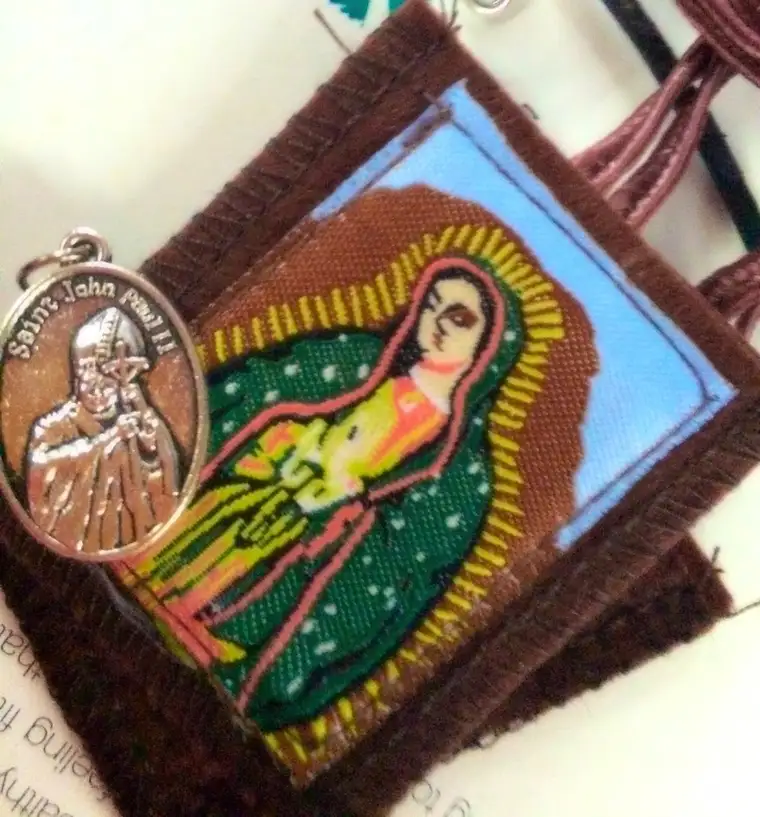
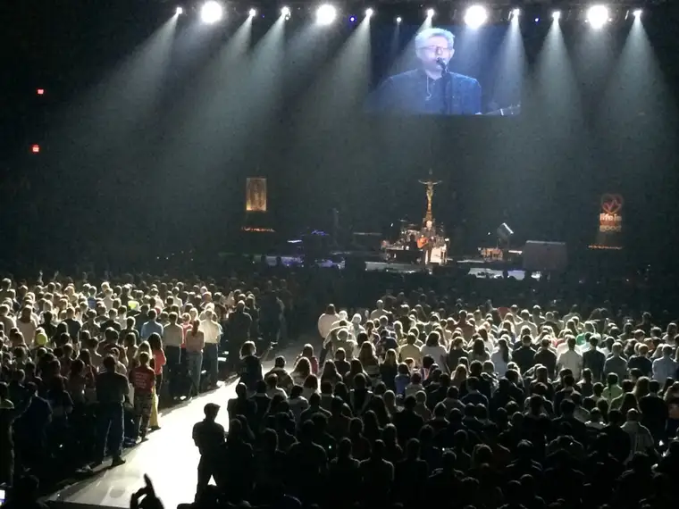
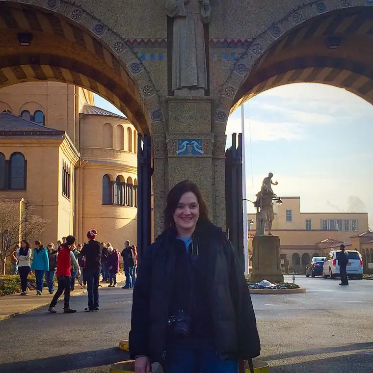
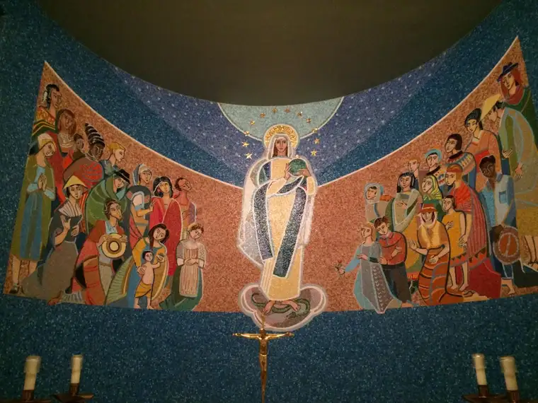

When I learned my two godsons would be heading to the 2017 March for Life, my heart leaped.
What godmother wouldn’t gleam to learn the one thing she’s been asked to do for those who’ve been attached to her in a spiritual way will be partially fulfilled — to help them grow closer to God?
From past experience, I have learned that the March for Life is so much more than about the march itself. Yes, ending up here is the goal.
Even the post-March sight-seeing counts for something. It is an historical city after all, and especially coming off the heels of the recent presidential election, an educational adventure.
But really, the whole thing begins much before then. It starts with prayer as the bus is leaving the parking lot with small remembrances of what it’s all really about.

It continues with the first order of business in D.C. — Mass.

And for many, rallies the evening before bring big faith to the hearts of those who come. For our group, Eucharistic Adoration and Reconciliation were part of this “get your minds and hearts prepared” event.
If you’re really lucky, a bit of Matt Maher will be mixed in there somewhere, too.

The prayers hold us up, and hold up the March itself. I’ve been there. I have felt the outpouring of grace. And it’s a beautiful thing.

I was able to be there as a chaperone in 2014 and 2015, the year these photos were taken and our Shanley High School students here in Fargo, N.D., carried the lead banner. Having experienced it twice before, my heart is there again this week. Today’s the day it happens all over again, as it has for since 1974, the year after Roe v. Wade became a tragic reality. I can feel, even from way out here in North Dakota, the energy of the students, the incredible anticipation, and a fair amount of the stress of those keeping everyone together and moving in the same general direction.
It’s an incredible journey that means everything to those who go, a chance to witness hundreds of thousands of others who care about life in a way so much of the world has lost sight of. For those who go, it’s an experience that’s likely to make an indelible imprint on their hearts.
Certainly, on the day of the March for Life and those before and after, D.C. isn’t the same city. It’s a city of hope, a beacon on The Hill. The area is covered with prayer. I remember feeling that incredible movement of hope as we flitted through the two adventures in which I participated.
Maybe some of this was part of the Women’s March on Washington that happened last weekend. I’m sure there were some who prayed in and for that effort, too. But in all of the coverage, at least, I didn’t see anything like what I’ve witnessed during these two March for Life events.

In the Women’s March coverage, I didn’t hear the stories of faith in God so much as the restlessness of women who have lost faith in humanity. While some went with good intentions, others showed up with anger on their hearts. Some pro-life marchers were spit on and heckled. This kind of thing is rare to nonexistent at the March for Life, at least within the line itself. Hearts have been prepared in prayer, and there is a surrender that is almost miraculous in a crowd that size.

The prayer, the pilgrimage, and passion of the people all come together in one place. The March for Life is not ambiguous; the message is clear. We march for life — all life — and that is a very good thing. We march for the babies, and the women, and the homeless people we walk by to get to the march site. We march for those who have lost hope and to remind the world that life is worth living, even when it’s hard.
I changed the time of a coffee date today because I did not want to miss the coverage. I can’t wait to see my friends on television, and all those who come to make a difference by their visible witness, and become part of this ocean of love.

During my last visit to D.C., I had a chance to connect with hope, and I pray that in the hours to come, my sweet godsons will feel the same fire of love and life that I did, and that they’ll have a renewed desire to burn brightly for our Lord.
Please pray for all the marchers, for peace, and conversion of heart. And praise God again with me, if you would, for the women whose heart turned away from abortion this week in Fargo, and toward the heart beating in the life of her child instead. One life that is spared makes the gigantic effort to make it this big event happen worth it.
Maybe someday we won’t have to march any longer, and we can focus our energy on other important things. For now, we must, and we do.
Q4U: Have you ever been involved in a large protest or effort for a cause? What was your experience like?